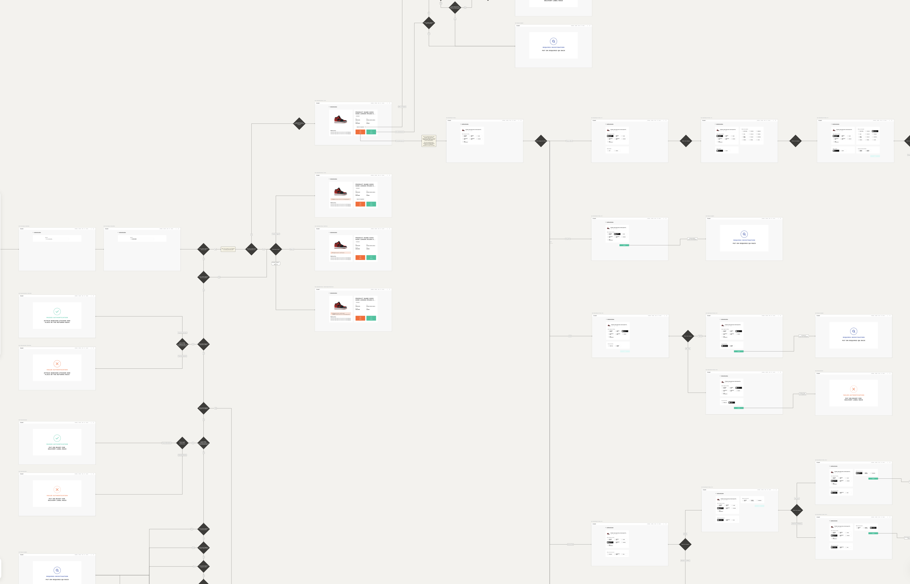
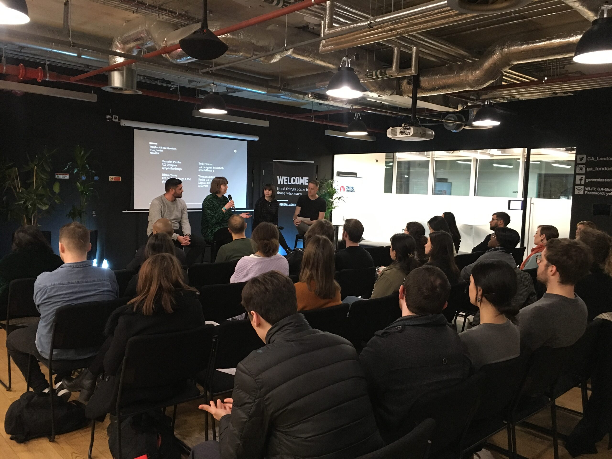

I use research, data and business context to challenge assumptions, align competing priorities and find a direction that works for users and the business.

I run agency-wide lunch & learns and smaller team sessions using real project work, so colleagues can apply the same thinking themselves. I’ve also line managed and mentored designers throughout my career and it’s a part of the role I genuinely enjoy.
